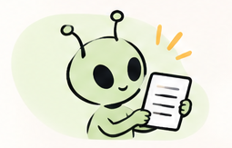
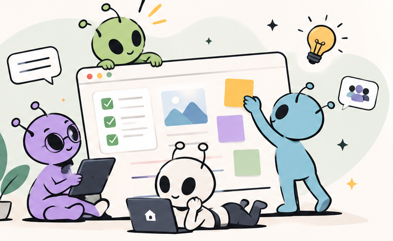
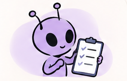

Documentation & Collaboration
Explore documentation standards, team collaboration, editorial guidelines, and knowledge-sharing practices.
Explore collaboration →ELIZA LUCEY | TECHNICAL WRITING PORTFOLIO
Explore how I approach technical writing, documentation architecture, API content, AI-assisted workflows, and developer education through an interactive sample workspace.
Step inside, explore the workspace, and let our little alien team show you how documentation brings everything together!
INSIDE THE HUDDLEHOUSE WORKSPACE
See how thoughtful documentation connects products, teams, and customers through a fictional SaaS workspace built to demonstrate real-world technical writing practices.

A CLOSER LOOK AT MY WORK
From documentation architecture and developer resources to AI-assisted writing and learning experiences, explore the skills and processes behind effective technical documentation.

Explore documentation standards, team collaboration, editorial guidelines, and knowledge-sharing practices.
Explore collaboration →
Discover documentation planning, project workflows, technical reviews, QA, and AI-assisted quality checks.
Explore projects →Explore API documentation, authentication guides, developer resources, SDK examples, and troubleshooting.
View developer docs →Discover how content is structured, organized, maintained, and made easier to navigate.
Browse resources →Explore beginner-friendly tutorials, instructional content, learning objectives, and interactive knowledge checks.
Start learning →WHAT THIS PORTFOLIO DEMONSTRATES
Effective technical documentation requires structure, technical understanding, collaboration, and continuous improvement. Here's a look at the capabilities represented throughout this portfolio.
Information architecture, content planning, topic organization, and documentation standards.
API documentation, technical instructions, troubleshooting, and developer-focused content.
AI content evaluation, prompt refinement, editorial rules, and human-in-the-loop quality reviews.
Git workflows, Markdown, structured content, version control, and collaborative reviews.
Content validation, workflow testing, documentation accuracy, and issue resolution.
A NOTE ABOUT THIS EXPERIENCE
Huddlehouse is a fictional SaaS product created by Eliza Lucey to demonstrate technical writing, documentation architecture, developer resources, AI-assisted workflows, and learning experiences. The content and scenarios are portfolio demonstrations designed to show how a documentation ecosystem can work together.